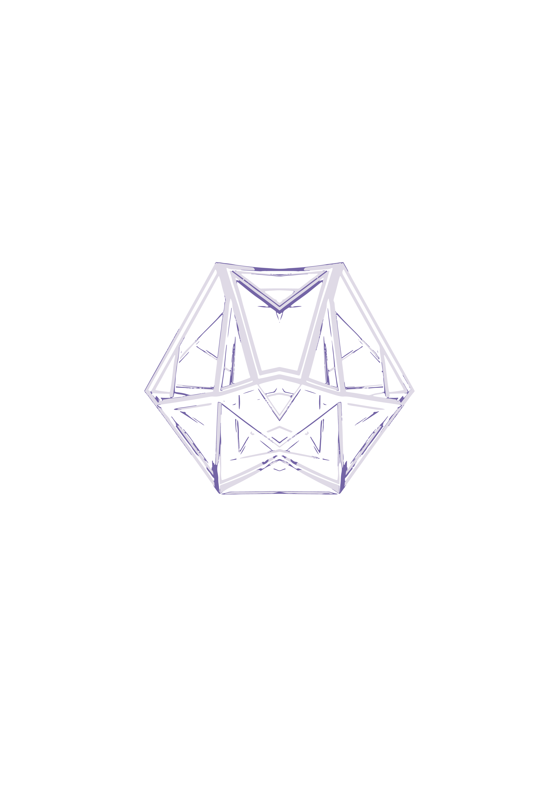

Sziasztok!
Barna Bence vagyok a [Flashnoise - Projection Mapping & Stage Design] alapítója, a MecsekTribe nagyszínpadának és dekorációjának tervezője/kivitelelezője és fényfestője.
4 éve foglalkozok fényfestéssel, utóbbi másfél évben vállalkozást kezdtem építeni mint projektor technikai cég (rental,fényfestés,vizuál technikus,rigging tech,projektor technikai szakember,) és 5 éve dolgozok a rendezvény iparban különböző posztokon különböző cégeknél mint vizuál technikus, fény technikus, hardware builder, stage hand, ipari alpinista(rigger).
Emellett a PTE MK-EZMBA szakon vagyok végzős hallgató.
Számomra ez a fesztivál egy tinédzserkori álom volt, amit Bogival és csapatával a semmiből emeltünk ki.
Örülök hogy részese lehetek ennek a fesztiválnak, hiszen Baranya megye meghatározó psytrance fesztiválját építjük.
A színpad terveit hamarosan publikálom. Annyit elárulhatok, hogy tervezett 11,4m hosszával és vetített felületével a külföldi psyszínpadok hangulatát fogom nektek elhozni.
Hamarosan jövök a színpad tervekkel!